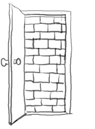

之前我們提到分別善惡的樹, 就是神在創造人類之前就為人所預備的一顆能警告人甚麼是危險的一棵樹, 人只要沒有越過那棵樹, 人就不會有危險, 也就是當初要是人類的始祖亞當和夏娃不要吃那果子, 人就不會把自己陷入危險的狀態, 更不會被神趕出伊甸園, 使神與人之間有了鴻溝.
然而, 我們不禁要問, 吃了分別善惡樹, 亞當和夏娃就知道甚麼是善? 甚麼是惡了嗎? 就變得更有智慧了嗎? 其實, 當我們發現亞當和夏娃吃下去分別善惡的果子時, 開始用自己的主觀去觀察身邊事物對自己的利益. 比方說, 開始覺得自己沒穿衣服是不好的, 開始會察覺自己做錯事而躲避神, 開始會推託責任, 怪神所造的女人或蛇的錯, 盡量把自己的責任降到最低, 好讓自己處在最佳的處境中, 能逃避神的審判或追責.
原本人可以無拘無束的在神面前與神交通, 但何時人變得這麼不自由, 必須開始躲避神呢? 到底是甚麼原因造成亞當和夏娃這麼不自由呢? 當人違背神的旨意, 開始懷疑神的話、神的標準而吃下分別善惡樹的果子時, 罪就悄悄地進入人的生命裡, 成為惡者最有利的盔甲兵器, 能夠有效的控制人, 也因著罪進入人類始祖的生命裡, 致使人生出來就帶著原罪, 讓惡者因而非法的取得掌控世界的權勢. 其實, 這裡的罪不是指著行為上, 如殺人、放火, 而是當拒絕神的判斷, 不要神作決定, 而是要自己決定甚麼是好, 甚麼是不好, 就是罪了. 因著罪, 所有的人都伏在惡者的掌控權勢之下, 受罪惡捆綁而失去自由. 如同保羅所說, 立志行善由得我, 只是行出來由不得我. 在這一章將探討如何重獲自由.
在這一章將探討如何重獲自由.
31. 耶穌對信祂的猶太人說：『你們若常常遵守我的道，就真是我的門徒。
32. 你們必曉得真理，真理必叫你們得以自由。』
33. 他們回答說：『我們是亞伯拉罕的後裔，從來沒有作過誰的奴僕；你怎麼說，你們 必得以自由呢？』
34. 耶穌回答說：『我實實在在的告訴你們；所有犯罪的，就是罪的奴僕。
35. 奴僕不能永遠住在家裏，兒子是永遠住在家裏。
36. 所以天父的兒子若叫你們自由，你們就真自由了。
在這段經文中, 其實耶穌要表達的是: 『你們想要自由嗎? 那麼必須做我的學生, 我的學生就會進入真理的境界, 而活在真理中, 生命才有真正的自由』. 以色列人在聽這段話的時候, 注意力全被『自由』兩個字拉走了, 必得以自由? 好像指出他們現在沒有自由一般? 可是他們自認為從來沒有賣身為奴, 並且他們還有最得意的身世背景, 以及優良的血統, 怎麼可能沒有自由呢? 他們自豪是亞伯拉罕的子孫, 也就是天父(上帝)家裡的人, 怎麼說他們現在的樣子是不自由呢? 其實, 以色列人講的自由是指社會地位的自由, 耶穌當然知道他們的社會背景, 所以祂所關心的不是這些, 而是越過社會背景的內在.
讀到這裡, 先來介紹亞伯拉罕是誰:
亞伯拉罕是以色列的祖先, 神曾揀選他, 要他放棄一切離開繁華的吾珥, 拜月神的地方, 到神為他預備的迦南地. （創12章）當亞伯拉罕順從神的吩咐, 到了迦南地, 神就四次賜福給他. 第一次, 要使亞伯拉罕成為大國並賜福給他而別人也要因他得福. 第二次, 神說凡他所看見一切地, 神都要賜給他和他的後裔, 並且他的後裔要像塵沙那樣多. 第三次, 神對亞伯拉罕說本身所生的才能成為後嗣, 他的後嗣要如天上的星一樣多; 第四次, 神在亞伯蘭九十九歲應許撒萊得子, 並堅定神與亞伯拉罕的約, 也預言耶穌基督要從他而出. 在這次的應許中, 神要作他和他後裔永永遠遠的上帝, 所以以色列百姓因神與亞伯拉罕立約而成為神的選民, 這也是為什麼他們看重有亞伯拉罕血統的原因.
- 這段聖經討論甚麼問題? 耶穌認為以色列人的情況如何? 以色列人自己覺得呢? 他們的標準是否相同?
- 耶穌認為自由的標準是甚麼? 您覺得這個標準如何?
- 根據這段聖經, 我們要怎樣才能享受自由?
其實這些以耶穌先提出一個關於自由的觀念, 隨後他們所探討的問題就圍繞這個主題. 耶穌認為以色列人是犯罪的, 是罪的奴僕, 所以不自由, 但是以色列人則認為自己是亞伯拉罕的後裔, 以神的選民為榮, 而不覺得自己是任何人的奴僕, 本身就是自由之身; 因此, 耶穌與以色列人對自由的評定標準是不相同的.
以色列人也知道自己是有罪的, 因為在這一章的開始, 有發生一件事情, 就是有一犯姦淫的婦女被抓到, 他們故意要刁難耶穌, 看耶穌怎麼處理. 因為在他們的律法中明訂, 凡犯姦淫被抓到的, 可以拿石頭將他們打死. 但是如果耶穌照律法而行, 他們就會質疑耶穌還傳甚麼神愛世人的道理呢, 但是如果耶穌放過那婦人, 他們就可以控告耶穌違背律法. 但耶穌卻說, 如果誰沒有罪的人, 可以先拿石頭丟那犯姦淫的婦人, 結果沒有人丟石頭, 因為每一個人都自知有罪. 接下來在這段中, 耶穌讓他們知道若不信耶穌是基督、是那拯救他們的彌賽亞, 他們就必死在罪中. (約8:24) 因為罪的代價就是死, 也就是與神永遠隔絕. 因此, 他們有真的自由嗎? 想想看, 他們在哪裡敬拜神呢? 在耶路撒冷的聖殿裡, 那殿是誰蓋的? 是希律王蓋的, 是神要他蓋的嗎? 他們必須靠著外邦人來建造聖殿, 才能敬拜神, 他們豈是自由的? 他們被巴比倫, 波斯, 希臘管轄過, 現在又被羅馬帝國管轄, 作亡國奴, 怎麼會自由呢？
耶穌認為真正的自由是我們內心或靈裡的自由, 也就是耶穌用是否有罪來判斷一個人的自由. 當我們靈裡自由時, 人才有能力面對各種狀況而不受引誘, 不受罪惡轄制, 這也才是真正的自由. 就如我們的法律, 當我們願意遵守法律, 我們在法律之下就是自由的. 或許有人的自由定義是我想做甚麼就做甚麼, 可以不受任何人, 制度的管理和限制, 這才是真自由. 康德說：自由就是我不做甚麼, 我就有能力不做我所要做的. 別再被欺騙說：我們想要做甚麼就做甚麼, 那不叫自由, 因為那只是起初的, 後來就變成我們要甚麼就不能甚麼, 因為我們反被他控制住了. 如果一個人犯了罪, 那麼他就好像簽了一個賣身契給罪, 沒有辦法脫身了. 舉一個例子來說吧! 公司裡有一些好處是心照不宣的, 你是新進人員, 本來打算安分守己的工作, 但是這種好處一旦享受過, 就成了共犯, 萬一以後有甚麼事情, 不是把以前的好處吐出去就可以解決的, 只有幫忙說謊, 作假來遮掩, 犯罪常會像滾雪球一樣, 越滾越大. 到後來, 連不犯罪的自由都沒有了! 小孩子作弊, 說謊是這種情形, 大人貪心, 自私也是這種情形, 這些事不想還好, 若認真去想, 這一生當中, 有許多事還真見不得人, 我們也把這些見不得人的事好好隱藏, 若有任何危險會暴露這些事, 我們就不惜說謊、攻擊, 甚至毀滅來保護這些事. 瞧! 我們可不是作罪的奴僕嗎? 我們會為了它犧牲許多事情和原則呢！
耶穌說, 你們既認為你們有亞伯拉罕的血統, 那與神的關係就是主僕的關係, 而僕人在神的家是沒有永久的居留權的, 如果人一旦犯了罪, 就會失去了永久的居留權. 因此, 若想重獲居住神家中的自由, 只有擁有這家中真正繼承權的兒子替我們背書, 我們在這個家中才有居住的自由. 但要神的兒子替我們背書, 就要解決罪的問題. 我們自由是因為如同左圖這個門可以隨意進出, 而我們常自認為在這個世界中, 我們是自由的, 因為我們想怎麼走就怎麼走, 但我們真的自由嗎? 我們其實無法自由地到神面前, 我們無法自由地想到永恆的國度. 因為罪如右圖那面牆阻礙我們到神那裏去. 我們只能往門的另一頭走, 但聖經告訴我們罪的工價乃是死, 所以即便我們自由的能往另外一頭走, 但最終是通往滅亡的道路, 我們沒有自由能到神那裏去.
那要如何解決罪的問題呢？耶穌其實在一開始的時候就講了:要享受真正的自由, 只有成為耶穌的門徒, 遵守祂的道(也就是祂的話), 當我們這樣做的時候, 祂就為我們背書. 值得注意的是, 這裡耶穌的意思並不是"因為你們做得好, 所以你們有機會.” 而是 "你們願意到我這裡來, 所以我就為你們張羅一切, 為我們拆掉阻礙我們到神那裡的那片牆.” 祂叫我們自由就是祂背書, 祂負責的意思, 於是我們成為有自由的人, 不是因為我們做得好, 而是因為祂"保我們過關"~這也是基督徒常說耶穌是中保的意思. 只要是基督徒都知道信耶穌之後會經歷一個很大的釋放, 整個人都輕鬆下來, 以前一些非做不可的壞習慣, 沒法啟齒, 一生被控告的過錯, 一些見不得人的過去, 忽然之間失去了威脅力, 整個人的自尊和價值都被提昇調整, 於是有一股新的力量面對人生各樣的挑戰.
一定要記得, 我們能得真正的自由是因為耶穌的寶血, 當我們信主的那刻, 我們的原罪和過往的罪, 因接受耶穌而全部得著赦免. 當我們接受耶穌的那刻, 也就表明我們願意讓耶穌作我們生命的主, 祂在我們的生命中有絕對的主權, 我們不再以己的主觀、利益來考量何為善、何為惡時, 就能脫離因吃分別善惡樹所帶了的不自由; 不但如此, 當我們願意遵守神的旨意, 結出生命的果子, 就如我們吃了那生命樹一樣, 能自由的活在神的面前, 常與祂同在. 因此, 信主不代表就可以完全永遠得自由, 因為在我們信仰的道路上, 我們仍會犯罪, 而這罪仍成為我們阻礙真正得自由的關鍵, 所以我們要天天認我們的罪, 求耶穌寶血遮蓋與赦免, 並且遵守耶穌的話, 成為祂的門徒, 活出神賜我們真理的新生命, 就可享受脫離罪, 得到真正的自由.